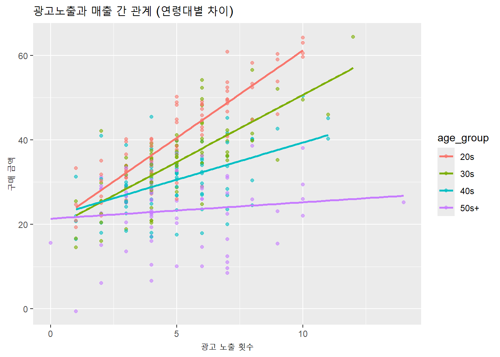
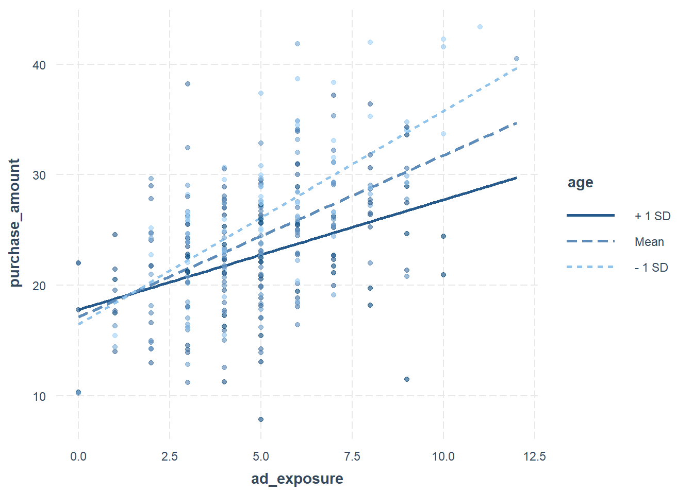
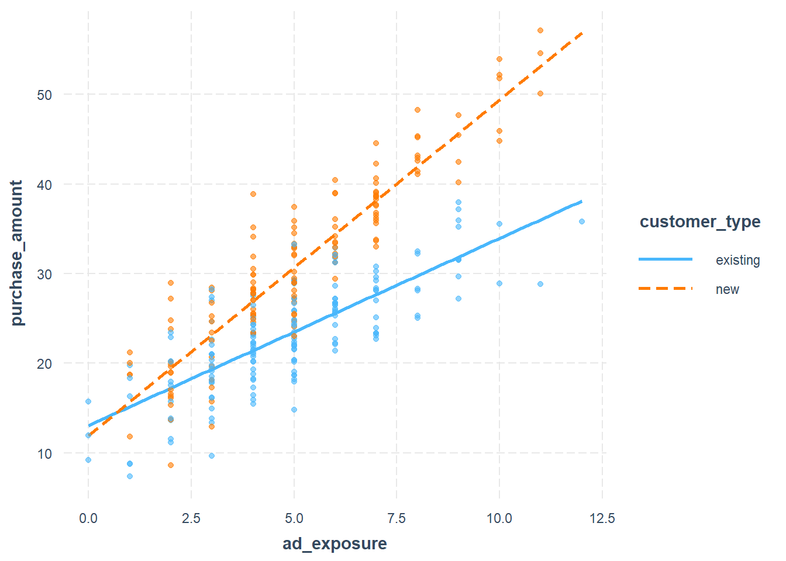

회귀분석의 기본 형태인 단순 선형 회귀는 하나의 독립변수가 종속변수에 미치는 영향을 직선의 형태로 설명한다. 예를 들어, 한 외식 브랜드가 고객에게 광고를 얼마나 많이 노출했는지가 그 고객의 구매금액에 어떤 영향을 주는지를 분석하고자 할 때, 다음과 같은 단순 회귀모형을 사용할 수 있다.
model_simple <- lm(purchase_amount ~ ad_exposure, data = df)summary(model_simple)
이 모형은 광고노출(ad_exposure)이 증가할수록 구매금액(purchase_amount)이 일정한 비율로 증가하거나 감소한다고 가정한다. 이때 회귀계수는 평균적인 효과를 나타내며, 모든 고객에게 동일하게 적용된다고 전제한다.
하지만 현실은 그렇게 단순하지 않다. 외식소비자는 다양한 연령대, 직업, 소비 성향을 가지고 있고, 이질적인 반응을 보인다. 예를 들어, 20대는 인스타그램 광고에 반응할 수 있지만, 60대는 종이전단이나 오프라인 쿠폰에 더 반응할 수도 있다. 이런 이질성을 반영하지 않는 단순 회귀는 평균적인 효과만을 보여줄 뿐, ‘누가 더 많이 반응하는가’, ‘어떤 조건에서 효과가 강해지는가’ 같은 중요한 질문에 답하지 못한다.
7.1.2 관계의 조건부 변화: 조절효과의 전조
다음과 같은 질문을 던져보자.
- 광고노출이 매출에 미치는 영향은 모든 고객에게 동일한가? - 젊은 고객은 광고에 더 민감하게 반응하지 않을까? - 매장 방문 빈도가 높은 고객은 광고 효과가 작지 않을까?
이 질문들의 핵심에는 조건부 효과라는 개념이 숨어 있다. 다시 말해, 광고노출과 매출 간의 관계가 어떤 제3의 변수(예: 연령, 성별, 방문빈도)에 따라 달라질 수 있다는 것이다. 이러한 현상을 조절효과(moderation effect)라고 부르며, 이후에 자세히 설명한다.
다음은 단순 회귀모형이 설명하지 못하는 조절효과의 가능성을 시각적으로 보여주는 예이다.
# 필요한 패키지 로드library(tidyverse)# 가상 데이터 생성set.seed(123)n <-300# 관측치 수df <-tibble(age_group =sample(c("20s", "30s", "40s", "50s+"), n, replace =TRUE),ad_exposure =rpois(n, lambda =5)) %>%mutate(age_numeric =case_when( age_group =="20s"~25, age_group =="30s"~35, age_group =="40s"~45, age_group =="50s+"~60 ),# 연령대별로 광고효과의 민감도 차이를 반영purchase_amount =case_when( age_group =="20s"~20+4* ad_exposure +rnorm(n, 0, 5), age_group =="30s"~20+3* ad_exposure +rnorm(n, 0, 6), age_group =="40s"~20+2* ad_exposure +rnorm(n, 0, 7), age_group =="50s+"~20+1* ad_exposure +rnorm(n, 0, 8) ) )library(ggplot2)ggplot(df, aes(x = ad_exposure, y = purchase_amount, color = age_group)) +geom_point(alpha =0.6) +geom_smooth(method ="lm", se =FALSE) +labs(title ="광고노출과 매출 간 관계 (연령대별 차이)",x ="광고 노출 횟수",y ="구매 금액")

위 그래프를 보면, 광고노출이 증가할수록 매출이 증가하는 경향은 있지만, 그 기울기(효과의 크기)는 연령대별로 달라질 수 있다. 즉, 광고 효과는 연령대에 따라 조절된다는 가설을 세울 수 있다.
7.1.3 관계의 중간 경로: 매개효과의 도입
또 하나의 중요한 확장 개념은 매개효과(mediation effect)다. 어떤 독립변수가 종속변수에 영향을 줄 때, 그 영향이 직접적일 수도 있지만, 중간 변수를 통해 간접적으로 작용할 수도 있다.
예를 들어, 외식 프랜차이즈에서 진행한 광고 캠페인이 바로 매출을 올렸다고 가정하는 것은 지나치게 단순한 해석이다. 실제로는 광고를 통해 고객의 브랜드 인식(태도)이 먼저 변화하고, 그 변화된 태도가 다시 구매 행동에 영향을 미쳤을 수 있다.
이를 식으로 표현하면 다음과 같다.
광고노출\(\rightarrow\)브랜드 태도\(\rightarrow\)매출
여기서 브랜드 태도가 매개변수(mediator)이며, 전체 효과는 다음과 같이 나뉜다.
- 직접효과: 광고 \(\rightarrow\) 매출 - 간접효과: 광고 \(\rightarrow\) 브랜드 태도 \(\rightarrow\) 매출
다음은 R 코드로 이 매개경로를 구성하고 시각화하는 간단한 예시이다.
library(tidyverse)set.seed(123)n <-300df <-tibble(ad_exposure =rpois(n, lambda =5), # 광고노출 빈도attitude =NA_real_, # 태도 변수 (미리 NA로 생성)purchase_amount =NA_real_# 최종 구매금액)# 광고노출이 브랜드 태도에 영향을 주고df <- df %>%mutate(attitude =3+0.8* ad_exposure +rnorm(n, 0, 1), # 평균 3, 광고 영향 0.8purchase_amount =10+2* attitude +0.3* ad_exposure +rnorm(n, 0, 2) # attitude가 주요 경로 )library(lavaan)# 매개모형 명시model_mediation <-' attitude ~ a * ad_exposure purchase_amount ~ b * attitude + c_prime * ad_exposure indirect := a * b total := c_prime + (a * b)'# 분석 수행fit <-sem(model_mediation, data = df, se ="bootstrap", bootstrap =1000)# 결과 요약summary(fit, standardized =TRUE, fit.measures =TRUE)
lavaan 0.6-19 ended normally after 1 iteration
Estimator ML
Optimization method NLMINB
Number of model parameters 5
Number of observations 300
Model Test User Model:
Test statistic 0.000
Degrees of freedom 0
Model Test Baseline Model:
Test statistic 958.936
Degrees of freedom 3
P-value 0.000
User Model versus Baseline Model:
Comparative Fit Index (CFI) 1.000
Tucker-Lewis Index (TLI) 1.000
Loglikelihood and Information Criteria:
Loglikelihood user model (H0) -1052.405
Loglikelihood unrestricted model (H1) -1052.405
Akaike (AIC) 2114.810
Bayesian (BIC) 2133.329
Sample-size adjusted Bayesian (SABIC) 2117.472
Root Mean Square Error of Approximation:
RMSEA 0.000
90 Percent confidence interval - lower 0.000
90 Percent confidence interval - upper 0.000
P-value H_0: RMSEA <= 0.050 NA
P-value H_0: RMSEA >= 0.080 NA
Standardized Root Mean Square Residual:
SRMR 0.000
Parameter Estimates:
Standard errors Bootstrap
Number of requested bootstrap draws 1000
Number of successful bootstrap draws 998
Regressions:
Estimate Std.Err z-value P(>|z|) Std.lv Std.all
attitude ~
ad_xpsr (a) 0.792 0.029 26.885 0.000 0.792 0.861
purchase_amount ~
attitud (b) 1.888 0.112 16.908 0.000 1.888 0.733
ad_xpsr (c_pr) 0.492 0.101 4.882 0.000 0.492 0.208
Variances:
Estimate Std.Err z-value P(>|z|) Std.lv Std.all
.attitude 0.973 0.084 11.633 0.000 0.973 0.259
.purchase_amont 3.926 0.310 12.655 0.000 3.926 0.158
Defined Parameters:
Estimate Std.Err z-value P(>|z|) Std.lv Std.all
indirect 1.496 0.104 14.329 0.000 1.496 0.631
total 1.988 0.078 25.422 0.000 1.988 0.838
이 모형을 통해 광고노출이 브랜드 태도에 긍정적 영향을 주고, 그 태도가 매출에 영향을 주는지 확인할 수 있다. 매개효과는 ’왜’라는 질문에 대한 통계적 답을 찾는 과정으로, 고객 행동의 내부 메커니즘을 이해할 수 있도록 도와준다.
7.1.4 단순 회귀를 넘어서는 이유: 전략적 통찰
단순 회귀는 변수 간의 평균적인 관계를 파악하는 데 유용하다. 그러나 실제 외식산업에서 마케팅, 메뉴 개발, 고객 세분화 전략을 수립하려면 그 이상의 통찰이 필요하다. 특히 다음과 같은 질문을 다루려면 단순 회귀를 넘어선 모형이 필요하다.
- 어떤 고객군이 마케팅에 더 민감한가? - 어떤 경로를 통해 우리의 캠페인이 효과를 발휘하는가? - 특정 조건에서 효과가 사라지거나 반전되는가?
이러한 질문은 모두 조절효과와 매개효과를 통해 답할 수 있다.
단순 회귀는 외식 데이터 분석의 출발점이지만, 실제 고객 행동의 복잡성을 설명하기에는 한계가 있다. 특정 관계가 다른 변수에 따라 달라지는 조절효과, 그리고 관계가 중간 변수에 의해 매개되는 매개효과는 단순 회귀가 설명하지 못하는 부분을 보완한다.
다음 단원에서는 이러한 확장된 개념 중 첫 번째인 조절효과에 대해 본격적으로 살펴본다. 조절변수를 식별하고, 상호작용항(interaction term)을 모델에 추가하여 관계의 조건부 구조를 어떻게 해석할 수 있는지 학습한다.
7.2 조절효과란 무엇인가?: Interaction Term의 이해
7.2.1 관계가 항상 일정할까?
외식 마케팅 담당자가 광고노출이 매출에 어떤 영향을 주는지를 분석하고자 한다고 가정하자. 단순 회귀모형을 적용하면 “광고를 많이 보면 매출이 늘어난다”는 결론에 도달할 수 있다. 그러나 모든 고객이 동일하게 반응할까?
젊은 고객은 온라인 광고에 민감하게 반응할 수 있고, 중장년층은 광고보다는 오랜 고객경험이나 입소문에 더 의존할 수도 있다. 이런 차이를 반영하지 않으면 우리는 광고효과를 평균적으로만 해석하는 오류를 범하게 된다. 이처럼 어떤 변수의 효과가 다른 변수에 따라 달라지는 현상을 조절효과(moderation effect)라고 한다.
7.2.2 조절효과의 개념적 구조
조절효과는 한 변수 X(예: 광고노출)가 종속변수 Y(예: 구매금액)에 미치는 영향이 제3의 변수 Z(예: 연령)에 따라 달라지는 구조를 가진다. Z는 조절변수이며, 이 구조는 다음과 같은 통계 모형으로 표현된다:
\[
Y = b_0 + b_1 \cdot X + b_2 \cdot Z + b_3 \cdot (X \times Z) + e
\]
여기서 \((X \times Z)\)가 상호작용항(interaction term)이며, 이 항의 회귀계수 \(b_3\)가 유의하면 조절효과가 있다고 본다.
7.2.3 외식산업 예제: 광고 효과는 연령에 따라 다를까?
가상의 외식소비자 데이터를 생성해 광고노출(ad_exposure)과 구매금액(purchase_amount) 사이의 관계가 연령(age)에 따라 달라지는지 분석해보자.
- 광고노출이 증가할수록 매출은 전반적으로 증가한다. - 그러나 나이가 많아질수록 광고 효과는 점차 약해진다 (interaction term의 계수는 음수).
회귀모형을 적합해보자.
model_interaction <-lm(purchase_amount ~ ad_exposure * age, data = df)summary(model_interaction)
Call:
lm(formula = purchase_amount ~ ad_exposure * age, data = df)
Residuals:
Min 1Q Median 3Q Max
-14.4086 -3.2096 -0.0942 3.7108 17.0142
Coefficients:
Estimate Std. Error t value Pr(>|t|)
(Intercept) 14.69119 2.81575 5.218 3.42e-07 ***
ad_exposure 3.19034 0.47895 6.661 1.32e-10 ***
age 0.06975 0.07721 0.903 0.367044
ad_exposure:age -0.04958 0.01303 -3.805 0.000172 ***
---
Signif. codes: 0 '***' 0.001 '**' 0.01 '*' 0.05 '.' 0.1 ' ' 1
Residual standard error: 4.995 on 296 degrees of freedom
Multiple R-squared: 0.3805, Adjusted R-squared: 0.3742
F-statistic: 60.59 on 3 and 296 DF, p-value: < 2.2e-16
출력 결과에서 ad_exposure:age 항의 계수가 유의하면 조절효과가 존재함을 의미한다.
7.2.4 시각화를 통한 조절효과 해석
상호작용은 시각적으로 해석하는 것이 이해에 효과적이다. interactions 패키지를 이용하면 조절효과를 쉽게 시각화할 수 있다.
library(interactions)interact_plot(model_interaction, pred = ad_exposure, modx = age, plot.points =TRUE)

mean(df$age)
[1] 34.81667
sd(df$age)
[1] 9.439991
이 그래프를 보면 연령대에 따라 광고노출의 효과가 달라지는 패턴을 확인할 수 있다. 나이가 어릴수록 광고노출의 기울기가 가파르게 나타나며, 연령이 높아질수록 그 기울기는 완만해진다. 이는 “연령이 광고 효과를 조절한다”는 증거다.
위의 그래프처럼 평균값, 평균값 \(\pm\) 표준편차로 그래프를 그리는 이유가 무엇일까?
여기서 조절변수로 사용된 age 라는 변수는 고객의 나이로 연속형 변수이다. 연속형변수가 조절효과가 있을 때, 단순하게 조절효과가 유의하다는 표현은 매우 불성실한 리포팅이다. 조절변수가 음의 방향으로 유의하므로 나이가 많아질 수록 광고노출과 매출의 관계는 줄어든다.는 표현이 보다 정확하다. 그런데, 이러한 표현은 분석자는 이해를 해도 보고를 받는 임원들은 전혀 이해하지 못할 수 있다. 또한, 조절의 정도가 얼마나 큰지도 중요하다. 통계적으로 유의할지라도 그 조절의 크기가 매우 작다면 사실 통계적 유의성은 현실적으로 별 의미가 없을 수도 있다.
따라서, 이러한 경우 항상 그래프로 결과를 표현하는 것이 중요하다. 문제는 조절변수가 연속형 변수이기 때문에, 구간을 나누어야 하는데, 구간을 나누는 기준이 명확하지 않다는 것이다. 대부분 이럴 경우 평균값과 표준편차를 이용한다. 이렇게 하면 대략적으로 평균나이와 표준편차를 이용해 계산이 가능하기 때문이다.
위의 경우 평균 나이를 35세로 보고, 표준편차를 9세 정도로 본다면, 대략 26세, 35세 그리고 44세의 고객의 평균적인 광고효과가 눈에 띄게 다르다는 점을 확인할 수 있다. 만약 평균 + 2 \(\times\) 표준편차 정도되면 대략 53세 정도가 될텐데, 이 경우 광고효과가 거의 없을 것이라는 사실을 예측할 수 있다. 즉, 시니어 시장확대를 위해 광고에 보다 많은 투자를 하는 것은 현실적으로 효과가 없다는 것을 알 수 있다.
7.2.5 범주형 조절변수의 해석
조절변수가 범주형일 때도 동일한 논리를 적용할 수 있다. 예를 들어 고객을 “신규”와 “기존”으로 나누고, 광고 효과가 고객 유형에 따라 달라지는지를 살펴보자.
고객유형이 기존 고객일 때(ad_exposure * customer_type_binary 항) 광고 효과가 감소하는 구조다.
조절효과의 회귀분석의 식을 여기에 다시 적용해보자.
\[
Y = b_0 + b_1 \cdot X + b_2 \cdot Z + b_3 \cdot (X \times Z) + e
\]
Z는 조절변수로서 1 = New customer; 0 = Existing customer 이다. 따라서 우리는 위의 조절효과의 회귀식을 둘로 나누어 볼 수 있다.
Z = 0: 기존고객의 회귀식
\[
Y = b_0 + b_1 \cdot X + e
\]
Z = 1: 신규고객의 회귀식
\[
Y = (b_0 + b_2) + (b_1 + b_3) \cdot X + e
\]
위의 두 식을 비교하면 차이를 명확하게 이해할 수 있다. 만약 더미변수인 Z가 유의할 경우 신규고객과 기존 고객간의 평균매출(절편)이 달라진다. 반면에, 조절변수 \((X \times Z)\)가 유의할 경우 신규고객과 기존고객간의 기울기가 달라진다. 기울기가 다르다는 의미는 동일한 수준의 광고노출 효과가 있을 경우 기존고객 보다는 신규고객의 매출 증가의 정도가 더 높다는 의미가 된다.
model_cat <-lm(purchase_amount ~ ad_exposure * customer_type, data = df_cat)summary(model_cat)
Call:
lm(formula = purchase_amount ~ ad_exposure * customer_type, data = df_cat)
Residuals:
Min 1Q Median 3Q Max
-10.8600 -2.9265 0.0654 2.5010 11.9338
Coefficients:
Estimate Std. Error t value Pr(>|t|)
(Intercept) 13.0610 0.7397 17.657 < 2e-16 ***
ad_exposure 2.0869 0.1372 15.207 < 2e-16 ***
customer_typenew -1.1143 1.0854 -1.027 0.305
ad_exposure:customer_typenew 1.6579 0.1968 8.423 1.61e-15 ***
---
Signif. codes: 0 '***' 0.001 '**' 0.01 '*' 0.05 '.' 0.1 ' ' 1
Residual standard error: 3.895 on 296 degrees of freedom
Multiple R-squared: 0.8066, Adjusted R-squared: 0.8047
F-statistic: 411.6 on 3 and 296 DF, p-value: < 2.2e-16
ad_exposure:customer_typeexisting 항이 유의하다면, 광고 효과가 고객유형에 따라 달라진다는 것을 의미한다.
시각화로 확인해보자.
interact_plot(model_cat, pred = ad_exposure, modx = customer_type, plot.points =TRUE)

그래프를 보면 신규 고객과 기존 고객 각각에 대해 광고노출이 매출에 미치는 영향의 기울기가 다르다는 것을 확인할 수 있다. 기존 고객은 이미 브랜드에 익숙하기 때문에 광고 효과가 작아지는 경향이 나타난다.
7.2.6 조절효과를 사용할 때 유의할 점
조절효과는 매우 강력한 분석 도구이지만, 몇 가지 주의할 점이 있다.
첫째, 상호작용항을 추가할 경우 해석이 단순하지 않다. 기본 효과(main effect)는 이제 특정 수준에서의 효과일 뿐이다. 예를 들어 \(b_1\)은 조절변수가 0일 때의 효과다. 위의 조절변숙 더미변수인 경우의 두 가지로 나누어서 본 회귀식을 확인해보라.
둘째, 조절변수가 연속형일 경우에는 평균 중심화(mean-centering)가 추천된다. 이는 다중공선성 문제를 줄이고 해석을 단순화한다. 예를 들어 다음과 같이 중심화된 변수로 분석할 수 있다.
df <- df %>%mutate(age_c =scale(age, center =TRUE, scale =FALSE) )model_centered <-lm(purchase_amount ~ ad_exposure * age_c, data = df)summary(model_centered)
Call:
lm(formula = purchase_amount ~ ad_exposure * age_c, data = df)
Residuals:
Min 1Q Median 3Q Max
-14.4086 -3.2096 -0.0942 3.7108 17.0142
Coefficients:
Estimate Std. Error t value Pr(>|t|)
(Intercept) 17.11981 0.70327 24.343 < 2e-16 ***
ad_exposure 1.46396 0.12947 11.308 < 2e-16 ***
age_c 0.06975 0.07721 0.903 0.367044
ad_exposure:age_c -0.04958 0.01303 -3.805 0.000172 ***
---
Signif. codes: 0 '***' 0.001 '**' 0.01 '*' 0.05 '.' 0.1 ' ' 1
Residual standard error: 4.995 on 296 degrees of freedom
Multiple R-squared: 0.3805, Adjusted R-squared: 0.3742
F-statistic: 60.59 on 3 and 296 DF, p-value: < 2.2e-16
셋째, 조절변수가 연속형 변수일 때, 평균값과 표준편차를 이용하여 구간을 나누어서 이해하고 해석하는 것이 보다 유익하다.
넷째, interaction term은 항상 실제 데이터에서 상호작용이 존재하는 경우에만 추가하는 것이 바람직하다. 무의미한 상호작용은 해석만 복잡하게 만들 뿐이다.
조절효과는 단순한 평균적 관계를 넘어서 “언제, 누구에게, 어떤 조건에서 효과가 강해지는가”를 분석할 수 있게 해준다. 외식산업에서 고객의 특성(연령, 방문빈도, 충성도 등)을 조절변수로 사용하면, 보다 정밀한 타깃 마케팅 전략을 설계할 수 있다.
다음에서는 관계가 어떤 중간 변수를 통해 형성되는지를 분석하는 매개효과(mediation effect)에 대해 다룬다. 조절효과가 조건부 관계의 구조를 밝히는 도구라면, 매개효과는 관계의 기제(mechanism)를 파악하는 도구다.
7.3 매개효과란 무엇인가?: Mediation의 개념과 경로분석
7.3.1 겉으로 보이는 관계 너머를 탐색하기
광고노출이 매출을 증가시킨다는 분석 결과를 얻었다고 가정하자. 이 결론만으로 마케팅 전략을 세울 수 있을까? 실제 고객이 광고를 본 뒤 바로 구매하는 경우도 있지만, 대부분은 광고를 보고 브랜드에 대한 호감이나 신뢰, 즉 태도(attitude)가 바뀐 뒤에 구매로 이어지는 경우가 더 많다. 이처럼 어떤 변수의 효과가 직접적으로 결과에 영향을 주는 것이 아니라, 다른 변수에 영향을 미친 후 다시 결과에 도달하는 경로를 매개효과(mediation effect)라고 한다.
고전적인 매개효과 검증 절차는 Baron & Kenny (1986)의 3단계 방식이다. 각 단계에서 회귀모형을 적합하고, 효과의 유의성을 확인한다.
\(1.\; X \rightarrow M\)이 유의해야 함 \(2.\; X \rightarrow Y\)가 유의해야 함 \(3.\; X \rightarrow Y\)의 효과가 M을 넣은 뒤 약해져야 함
위의 3단계에서 매개변수(M)이 추가로 투입된 후에 독립변수(X)가 유의하지 않게 변하면, 매개변수(M)의 매개효과는 완전매개가 되고, 매개변수(M)가 추가로 투입된 후에도 독립변수(X)가 여전히 유의하다면, 매개변수(M)의 매개효과는 부분매개가 된다.
R에서 이를 확인하기 위한 기본 회귀 분석은 다음과 같다:
# 1단계: X → Msummary(lm(attitude ~ ad_exposure, data = df))
Call:
lm(formula = attitude ~ ad_exposure, data = df)
Residuals:
Min 1Q Median 3Q Max
-2.6668 -0.6209 -0.0172 0.6392 3.2174
Coefficients:
Estimate Std. Error t value Pr(>|t|)
(Intercept) 3.06202 0.14750 20.76 <2e-16 ***
ad_exposure 0.79233 0.02716 29.17 <2e-16 ***
---
Signif. codes: 0 '***' 0.001 '**' 0.01 '*' 0.05 '.' 0.1 ' ' 1
Residual standard error: 0.9898 on 298 degrees of freedom
Multiple R-squared: 0.7406, Adjusted R-squared: 0.7398
F-statistic: 851 on 1 and 298 DF, p-value: < 2.2e-16
# 2단계: X → Ysummary(lm(purchase_amount ~ ad_exposure, data = df))
Call:
lm(formula = purchase_amount ~ ad_exposure, data = df)
Residuals:
Min 1Q Median 3Q Max
-8.0723 -1.9102 -0.0475 1.7906 7.7540
Coefficients:
Estimate Std. Error t value Pr(>|t|)
(Intercept) 15.64186 0.40659 38.47 <2e-16 ***
ad_exposure 1.98801 0.07487 26.55 <2e-16 ***
---
Signif. codes: 0 '***' 0.001 '**' 0.01 '*' 0.05 '.' 0.1 ' ' 1
Residual standard error: 2.728 on 298 degrees of freedom
Multiple R-squared: 0.7029, Adjusted R-squared: 0.7019
F-statistic: 705.1 on 1 and 298 DF, p-value: < 2.2e-16
# 3단계: X + M → Ysummary(lm(purchase_amount ~ ad_exposure + attitude, data = df))
Call:
lm(formula = purchase_amount ~ ad_exposure + attitude, data = df)
Residuals:
Min 1Q Median 3Q Max
-5.4233 -1.3287 0.0217 1.4467 5.1101
Coefficients:
Estimate Std. Error t value Pr(>|t|)
(Intercept) 9.8611 0.4641 21.247 < 2e-16 ***
ad_exposure 0.4922 0.1073 4.587 6.64e-06 ***
attitude 1.8879 0.1165 16.199 < 2e-16 ***
---
Signif. codes: 0 '***' 0.001 '**' 0.01 '*' 0.05 '.' 0.1 ' ' 1
Residual standard error: 1.991 on 297 degrees of freedom
Multiple R-squared: 0.8423, Adjusted R-squared: 0.8412
F-statistic: 793 on 2 and 297 DF, p-value: < 2.2e-16
Baron & Kenny 방식은 절차적으로 간단하지만, 간접효과의 통계적 유의성이 있는지를 직접 검증하지 못한다는 한계가 있다. 쉽게 설명하자면, 1단계의 독립변수의 회귀계수를 \(a\)라고 하고, 3단계의 매개변수의 회귀계수를 \(b\)라고 할 때, 매개효과는 \(a \times b\)가 되는데, 이 \(a \times b\)의 유의성을 직접 검증하는 것이 아니라, 단계별로 쪼개서 나누어 검증하기 때문에 직접검증을 하지 못하는 한계가 있다는 의미이다.
7.3.5 소벨 테스트로 간접효과 유의성 검정하기
Baron & Kenny 방식은 각각의 경로 계수(a, b)의 유의성을 따로 검정하지만, 정작 핵심인 간접효과\(a \times b\) 자체의 유의성을 직접 검정하지 못한다. 이를 보완하기 위해 등장한 방법이 바로 소벨 테스트(Sobel test)다.
소벨 테스트는 다음과 같은 식을 사용하여 \(a \times b\)의 표준오차를 계산하고, 이를 기반으로 Z-값을 구해 유의성을 판단한다.
이 검정은 정규분포 가정을 기반으로 하기 때문에, 표본 수가 작거나 분포가 비정규일 경우 신뢰성이 낮아질 수 있다. 이런 경우에는 이후의 bootstrapping 방식(lavaan 기반)이 더 정확하므로 사용이 권장된다.
소벨 테스트는 매개효과를 수학적으로 이해하는 데 유용한 도구이며, \(a \times b\)의 유의성을 수식 기반으로 검정할 수 있다는 점에서 가치는 크다. 그러나 현실 데이터에서는 간접효과의 분포가 비정규적인 경우가 많기 때문에, 실제 연구에서는 bootstrapping 기반 검정이 더 신뢰할 수 있는 방법이다.
7.3.6 PROCESS 모델과 Bootstrapping
최근에는 Hayes의 PROCESS model이나 구조방정식 모형(lavaan) 기반 분석이 더 널리 사용된다. 이 방식은 간접효과의 크기를 계산하고, 부트스트래핑(bootstrapping)을 통해 그 유의성을 직접 검정한다.
아래는 lavaan을 이용한 매개모형 분석 코드다.
library(lavaan)model_mediation <-' attitude ~ a * ad_exposure purchase_amount ~ b * attitude + c_prime * ad_exposure indirect := a * b total := c_prime + (a * b)'fit <-sem(model_mediation, data = df, se ="bootstrap", bootstrap =1000)summary(fit, standardized =TRUE, fit.measures =TRUE)
lavaan 0.6-19 ended normally after 1 iteration
Estimator ML
Optimization method NLMINB
Number of model parameters 5
Number of observations 300
Model Test User Model:
Test statistic 0.000
Degrees of freedom 0
Model Test Baseline Model:
Test statistic 958.936
Degrees of freedom 3
P-value 0.000
User Model versus Baseline Model:
Comparative Fit Index (CFI) 1.000
Tucker-Lewis Index (TLI) 1.000
Loglikelihood and Information Criteria:
Loglikelihood user model (H0) -1052.405
Loglikelihood unrestricted model (H1) -1052.405
Akaike (AIC) 2114.810
Bayesian (BIC) 2133.329
Sample-size adjusted Bayesian (SABIC) 2117.472
Root Mean Square Error of Approximation:
RMSEA 0.000
90 Percent confidence interval - lower 0.000
90 Percent confidence interval - upper 0.000
P-value H_0: RMSEA <= 0.050 NA
P-value H_0: RMSEA >= 0.080 NA
Standardized Root Mean Square Residual:
SRMR 0.000
Parameter Estimates:
Standard errors Bootstrap
Number of requested bootstrap draws 1000
Number of successful bootstrap draws 998
Regressions:
Estimate Std.Err z-value P(>|z|) Std.lv Std.all
attitude ~
ad_xpsr (a) 0.792 0.029 26.885 0.000 0.792 0.861
purchase_amount ~
attitud (b) 1.888 0.112 16.908 0.000 1.888 0.733
ad_xpsr (c_pr) 0.492 0.101 4.882 0.000 0.492 0.208
Variances:
Estimate Std.Err z-value P(>|z|) Std.lv Std.all
.attitude 0.973 0.084 11.633 0.000 0.973 0.259
.purchase_amont 3.926 0.310 12.655 0.000 3.926 0.158
Defined Parameters:
Estimate Std.Err z-value P(>|z|) Std.lv Std.all
indirect 1.496 0.104 14.329 0.000 1.496 0.631
total 1.988 0.078 25.422 0.000 1.988 0.838
분석 결과에는 다음과 같은 핵심 계수가 포함된다:
- a: 광고노출이 태도에 미치는 효과 - b: 태도가 매출에 미치는 효과 - c_prime: 광고노출의 직접효과 - indirect: 간접효과 (a × b) - total: 총효과 (직접 + 간접)
7.3.7 시각화를 통한 매개모형 해석
매개효과를 시각적 모형으로 그리면 다음과 같다. lavaanPlot 패키지를 이용하면 위 모형을 시각적으로 확인할 수 있다.
이 그림을 통해 광고노출 \(\rightarrow\) 태도 \(\rightarrow\) 구매금액이라는 경로가 어떻게 구성되는지, 간접효과가 얼마나 기여하는지를 한눈에 볼 수 있다.
7.3.8 간접효과의 유의성: 왜 bootstrapping이 중요한가?
Baron & Kenny 방식은 간접효과가 유의한지 직접 검정하지 않기 때문에 Type I/II 오류 위험이 크다. 반면 lavaan에서는 bootstrap을 통해 \(a \times b\)의 분포를 시뮬레이션하고, 신뢰구간을 계산해 간접효과의 유의성 여부를 정확히 평가할 수 있다.
lhs op rhs label est se z pvalue ci.lower ci.upper std.lv
1 indirect := a*b indirect 1.496 0.104 14.329 0 1.294 1.702 1.496
std.all std.nox
1 0.631 0.3
만약 95% 신뢰구간이 0을 포함하지 않는다면 간접효과는 유의하다고 판단한다.
7.3.9 현실 적용: 외식 마케팅 전략에서 매개효과 활용
외식산업에서 매개모형은 매우 실용적인 도구다. 단순히 어떤 광고가 매출에 영향을 주는지를 넘어서, 그 광고가 어떻게 고객의 인식을 바꾸고, 그 인식이 어떤 방식으로 소비행동에 영향을 주는지를 파악할 수 있다.
예를 들어, 다음과 같은 전략적 질문을 분석할 수 있다:
- 캠페인이 브랜드 신뢰도를 얼마나 높였는가? - 소비자 태도의 변화 없이 광고만으로 매출이 올라갈 수 있는가? - 브랜드 태도가 구매의도에 미치는 영향은 연령대에 따라 다른가?
매개효과는 관계의 메커니즘(mechanism)을 설명하는 강력한 통계적 도구다. 독립변수가 종속변수에 어떤 중간 경로를 통해 영향을 미치는지를 파악할 수 있으며, 브랜드전략, 마케팅캠페인, 고객경험 설계에 중요한 인사이트를 제공한다.
다음 단원에서는 조절효과와 매개효과가 결합된 복합모형(예: 조절된 매개, 매개된 조절)에 대해 살펴본다. 이제 분석은 ’누가, 왜, 어떤 경로로 반응하는가’를 동시에 설명할 수 있는 복잡한 구조로 나아간다.
7.4 조절 vs 매개: 구분과 혼합모형
7.4.1 왜 ’조절’과 ’매개’를 구분해야 할까?
외식산업 데이터를 분석하다 보면 “어떤 변수가 왜 영향을 주는가?”와 함께 “어떤 조건에서 그 영향이 더 강해지는가?”를 함께 질문하게 된다. 이 두 질문은 각각 매개효과(mediation)와 조절효과(moderation)에 대응된다. 두 개념은 모두 변수 간 관계를 확장하는 도구이지만, 이론적 구조, 모형 설계 방식, 통계적 해석 측면에서 서로 명확하게 구분된다.
매개효과는 효과의 경로(pathway)에 집중한다. 독립변수가 종속변수에 영향을 미치기 위해 어떤 중간 변수를 거치는지를 밝힌다. 반면 조절효과는 효과의 조건(condition)에 주목한다. 특정 효과가 어떤 변수에 의해 강화되거나 약화되는가를 밝히는 것이 핵심이다.
예를 들어 “광고노출이 브랜드 태도를 바꾸고, 그 태도가 구매금액을 증가시킨다”는 주장은 매개모형에 해당한다. 반면 “광고 효과는 연령대에 따라 달라진다”는 주장은 조절모형이다.
7.4.2 기본 구조의 시각적 비교
효과 유형
설명
도식 구조
매개효과
X가 M을 거쳐 Y에 영향을 줌
\(X \rightarrow M \rightarrow Y\)
조절효과
X와 Y의 관계가 Z에 따라 달라짐
\(X \times Z \rightarrow Y\)
두 효과는 서로 독립적으로 사용될 수도 있지만, 현실 세계에서는 이 둘이 결합된 구조로 나타나는 경우가 많다. 이를 복합모형이라고 부르며, 대표적으로 조절된 매개(Moderated Mediation)와 매개된 조절(Mediated Moderation)이 있다.
7.4.3 조절된 매개(Moderated Mediation)란 무엇인가?
조절된 매개는 말 그대로 “매개효과의 강도 자체가 조절된다”는 개념이다. 즉, 독립변수가 매개변수를 거쳐 종속변수에 영향을 미치는 간접효과가 제3의 변수에 따라 달라질 수 있다는 것이다.
외식산업 예제를 들어보자. 어떤 브랜드가 SNS 광고를 통해 브랜드 태도를 형성하고, 그 태도가 매출에 영향을 준다고 하자. 그런데 고객의 연령대에 따라 광고가 태도에 미치는 영향 자체가 달라진다면, 매개경로의 첫 번째 단계가 조절되고 있는 것이다.
구조는 다음과 같다:
조절된 매개
연령대가 광고노출과 태도 간 관계를 조절한다면, 전체 간접효과가 연령에 따라 달라지는 것이다.
다음은 조절된 매개를 모의 데이터로 구성한 예시이다.
library(tidyverse)set.seed(1)n <-300df_mm <-tibble(ad_exposure =rpois(n, lambda =5),age =round(rnorm(n, mean =35, sd =10), 0)) %>%mutate(# age가 높을수록 광고의 태도에 대한 영향이 감소attitude =3+0.8*ad_exposure -0.02*ad_exposure*age +rnorm(n, 0, 1),purchase_amount =10+2*attitude +rnorm(n, 0, 2) )
이제 lavaan으로 구조방정식 모형을 작성할 수 있다. 하지만 조절된 매개는 일반적으로 PROCESS model 7 또는 8번 모형으로 구현되며, lavaan만으로는 직접 interaction term을 포함한 매개경로 해석이 복잡할 수 있다. 이런 경우 moderated_mediation() 구조를 명시적으로 구성하거나 PROCESS macro가 탑재된 processR 패키지를 사용할 수도 있다.
7.4.4 매개된 조절(Mediated Moderation) 구조는 어떤가?
이번에는 조절효과가 먼저 존재하고, 그 조절효과가 다른 변수에 의해 설명되는 구조를 생각해보자. 즉, 독립변수와 조절변수의 interaction이 종속변수에 영향을 주고, 이 interaction의 효과가 어떤 중간 변수를 통해 영향을 미친다면 매개된 조절이 된다.
예시: 광고노출과 고객 충성도의 상호작용이 매출에 영향을 미친다고 하자. 그런데 이 효과는 브랜드 이미지 인식을 거쳐 나타난다면, 조절효과가 먼저 있고 그 조절이 매개된 것이다.
첫째, 조절과 매개의 방향을 이론적으로 명확히 해야 한다. 예를 들어 “광고 효과가 연령에 따라 달라진다”는 구조를 설정해놓고, 그 효과가 브랜드 태도에 의해 설명된다고 말하면 모형이 논리적으로 뒤바뀔 수 있다.
둘째, interaction term을 매개하는 구조를 만들 경우, 단순한 선형 회귀분석으로는 구조를 해석하기 어렵다. 이런 경우 구조방정식(SEM)이나 PROCESS macro와 같은 복합 모형 전용 분석도구가 필요하다.
셋째, 샘플 수가 충분히 확보되어야 한다. 조절된 매개는 상호작용항과 간접효과가 동시에 포함되기 때문에 모형이 복잡해지고 통계적 검정력이 급격히 떨어질 수 있다.
조절과 매개는 모두 변수 간 관계를 확장해주는 강력한 도구다. 하지만 분석을 설계할 때 이 둘이 구조상 어떻게 다르며, 어떤 상황에서 하나를 선택하고, 어떤 경우에는 함께 사용해야 하는지를 분명히 이해해야 한다. 특히 복합모형에서는 변수 간 이론적 연결성을 명확히 설계하고, 해석에 있어 혼란을 피하는 것이 중요하다.
7.4.6 조절된 매개모형의 실습
수식 기호
변수명 (데이터 내)
설명
\(X\)
ad_exposure
광고노출 횟수
\(W\)
age
연령 (조절변수)
\(M\)
attitude
브랜드 태도 (매개변수)
\(Y\)
purchase_amount
구매금액 (종속변수)
즉, 이 데이터는 단순 매개도 아니고, 단순 조절도 아니며, 광고노출 \(\rightarrow\) 태도 \(\rightarrow\) 구매금액이라는 매개 경로 안에서 연령이 광고의 영향력을 조절하는 복합 구조를 가진다. 이제 이 데이터를 R에서 분석하려면 lavaan 기반으로 다음과 같은 모형을 지정하게 된다:
# 1. 패키지 로드library(lavaan)library(lavaanPlot)library(readr)library(tidyverse)# 2. 데이터 불러오기 (Python에서 저장한 df_mm 사용)df <- df_mm# 3. interaction term 직접 생성 (lavaan은 formula 연산자를 지원하지 않음)df$int_exposure_age <- df$ad_exposure * df$age# 4. lavaan용 모델 정의 (조절된 매개효과 포함, 직접효과 추가됨)model7_full <-' # 조절된 매개 경로 attitude ~ a1*ad_exposure + a2*age + a3*int_exposure_age # 결과 변수에 대한 경로 purchase_amount ~ b*attitude + cp*ad_exposure # 간접효과 정의 indirect := a1 * b direct := cp total := cp + (a1 * b)'# 5. 모델 적합fit7 <-sem(model7_full, data = df, se ="bootstrap", bootstrap =1000)# 6. 요약 출력summary(fit7, standardized =TRUE)
lavaan 0.6-19 ended normally after 1 iteration
Estimator ML
Optimization method NLMINB
Number of model parameters 7
Number of observations 300
Model Test User Model:
Test statistic 1.857
Degrees of freedom 2
P-value (Chi-square) 0.395
Parameter Estimates:
Standard errors Bootstrap
Number of requested bootstrap draws 1000
Number of successful bootstrap draws 1000
Regressions:
Estimate Std.Err z-value P(>|z|) Std.lv Std.all
attitude ~
ad_exposr (a1) 0.918 0.100 9.177 0.000 0.918 1.193
age (a2) 0.018 0.015 1.261 0.207 0.018 0.121
int_xpsr_ (a3) -0.024 0.003 -8.467 0.000 -0.024 -1.322
purchase_amount ~
attitude (b) 1.966 0.080 24.687 0.000 1.966 0.827
ad_exposr (cp) -0.015 0.068 -0.218 0.827 -0.015 -0.008
Variances:
Estimate Std.Err z-value P(>|z|) Std.lv Std.all
.attitude 1.165 0.094 12.365 0.000 1.165 0.478
.purchase_amont 4.364 0.361 12.100 0.000 4.364 0.317
Defined Parameters:
Estimate Std.Err z-value P(>|z|) Std.lv Std.all
indirect 1.805 0.212 8.499 0.000 1.805 0.987
direct -0.015 0.068 -0.218 0.827 -0.015 -0.008
total 1.790 0.222 8.051 0.000 1.790 0.979